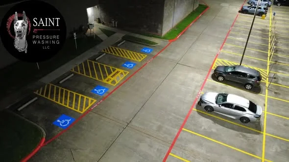

Who shows up.
Saint Pressure Washing LLC is based out of Cypress and services the suburbs all around Houston — commercial lots first, homes too.
 The rig
The rigCommercial-first. Houston-wide.
Saint Pressure Washing LLC handles commercial pressure washing, parking lot striping and post-construction cleanup across the greater Houston area — and brings the same equipment to homeowners for driveways, exteriors and soft washing.
Their motto says it plainly: “You make the mess, we'll do the rest.” Jobs have taken the crew to county facilities, retail centers, new construction in Tomball and lots used for Texans game-day parking.
Straight from reviews.
“He’s always on time.”
— Jason Cruz“The level of professionalism is super high.”
— Amanda Lipscomb“They kept the job sites clean.”
— Amanda Lipscomb“An exceptional communicator and team leader.”
— Amanda Lipscomb10/10 experience, Tony knows what he’s doing and he’s always on time. 100% recommend coming from a business owner.
I could not recommend Saint Power Washing higher. The level of professionalism is super high. The owner, Tony, is an exceptional communicator and team leader. I was very impressed with their work. They kept the job sites clean and completed all jobs so well and in a very timely manner. I have and will keep hiring the team to come back.
Saint Pressure Washing LLC in Cypress, 281-908-7222. Tony does a GREAT job and is a nice young man.
Questions, answered.

ADA layout · nightHow do you price your services?
Pricing depends on the size of the area, the type and condition of the surface, the level of buildup, and any special cleaning requirements. Saint also considers the equipment, materials and time needed to do the job safely and effectively, then gives a clear, upfront estimate — fair and transparent for every customer.
What is soft washing?
Soft-washing is lower-pressure water combined with a chemical agent that washes away unwanted growth or debris built up over time. It is the safest and most efficient way to clean the exterior of a home or property.
Why hire a professional instead of doing it myself?
The surfaces, cleaning products and pressure all affect how clean your surfaces get and how long they stay clean. Saint has the chemicals, equipment and experience to clean even the most difficult surfaces.
Do you work on commercial properties?
Yes — commercial pressure washing is Saint’s main focus, along with parking lot striping, ADA parking layout and post-construction cleanup.
Do you clean homes too?
Yes. Residential surface cleaning and soft washing cover driveways, walks and home exteriors.
What areas do you serve?
Saint is based in Cypress and serves the greater Houston area. Recent jobs have been tagged in Houston, Baytown and Tomball.
How do I get a quote?
Call or text (281) 908-7222 or email saintpressurewashing@gmail.com. Quotes and consultations are free.
Get a free quote & consultation
Call or text a photo of the job — lots, garages, walks, new construction or your driveway. Saint will size it up and give you a clear, upfront estimate.